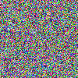
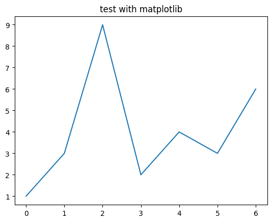

from fastcore.test import *Implementation details
NOTE: we use default_exp __init__ in order to enable this as soon as you import the module.
WARNING: cells magic are striped out during documentation generation; this is the reason why there is the same cell magic as comment too.
testcell
testcell (line, cell, local_ns)
Here are some notes on the implementation of the main testcell function: + @needs_local_scope: adding this annotation will add the local_ns argument to the cell magic. We’ll use this dictionary instead of globals() to access notebook state. + arr is an intemediate structure used to easily modify the source code. + wrapped_cell will contain the final code that will be executed. + As far as I know, if the result (aka last line) of a cell is None, nothing is displayed, so the statement if _ is not None: display(_) tries to mimic this behavior when noreturn is added. + we use _locals={'_':None} to hide that variable and avoiding it get modified in _global scope.
IMPORTANT: explicitly injectiong _globals in exec is very important because the default behaviour may be different across multiple versions of IPython/Jupyter.
Let’s define %%testcelln: a shortcut to %%testcell noglobals
testcelln
testcelln (line, cell, local_ns)
Test variable scope
aaa = "I'm in global scope"# %%testcell
aaa_in_globals = 'aaa' in globals().keys()
print(f'"aaa" variable is in global namespace: {aaa_in_globals}')
assert aaa_in_globals"aaa" variable is in global namespace: True# %%testcelln
aaa_in_globals = 'aaa' in globals().keys()
print(f'"aaa" variable is in global namespace: {aaa_in_globals}')
assert not aaa_in_globals"aaa" variable is in global namespace: Falsedel aaaTest noreturn
_= '???' # let's initialize with a known value to ensure no midificaiton is happening# %%testcell noreturn
a = 1; a1test_eq(_,'???') # Ensures last testno changes to last cell result `_`# %%testcell
a = 1; a1test_eq(_,'???') # `testcelln` will behave like `testcell noresult`# %%testcell
a = 1; a1test_eq(_,1) # If we let the return flow `_` will get modifiedStandard use cases
Common use case when you want to seamlessly display the output of a computation
# %%testcell
a=1
a=a+3
a4Last cell results has been updated as expectedn
assert _==4 # last cell resultDespite this seems to be a normal cell variable a is not part of the global scope.
assert 'a' not in locals()If the last statement is a display or a print it works in any case. The trick is that both these instructions are actually functions that returns None, so for the way jupyter cells works there will be no out[] block.
# %%testcell
a=1
a=a+4
display(a)5assert _==None # this is correct because both display and print returns none.
assert display('display returns none') == None
assert print('print returns none') == None'display returns none'print returns noneAll major use cases should be covered:
# %%testcell
# simple inline
a=1; a1test_eq(_,1)# %%testcell
# complex inline
a=1; {'value': a,
'note': 'complex multi line statement'}{'value': 1, 'note': 'complex multi line statement'}test_eq(_,{'value': 1, 'note': 'complex multi line statement'})assert 'a' not in locals() # After all these tests `a` is still not inside globalsOther available options
This magic supports the following options:
noglobals: this runs the cell in a completely isolated environmentverbose: it prints out the code before executing itdryrun: just print the code without executing it
Here are the examples
# %%testcell noglobals
the_locals = locals().keys()
print(f'locals() = {the_locals}')
assert list(the_locals)==[] # no locals!
the_globals = globals().keys()
print(f'globals() = {the_globals}')
assert list(the_globals)==['__builtins__'] # only standard pythonlocals() = dict_keys([])
globals() = dict_keys(['__builtins__'])# %%testcell verbose
b=3
b### BEGIN
def _test_cell_():
# %%testcell verbose
b=3
return b # %%testcell
try:
_ = _test_cell_()
finally:
del _test_cell_
_ # This will be added to global scope
### END
3test_eq(_,3) # verbose display the code and execute it# %%testcell dryrun
b=1
b
assert False # we should not be here because code is supposed to not be executed### BEGIN
def _test_cell_():
# %%testcell dryrun
b=1
b
assert False # we should not be here because code is supposed to not be executed
try:
_ = _test_cell_()
finally:
del _test_cell_
if _ is not None: display(_)
### END
Finally it properly works with any kind od displayable output too:
# test imports
from PIL import Image
import numpy
import matplotlib.pyplot as plt# %%testcell
rng = numpy.random.default_rng(1234)
arr = rng.uniform(size=( 100,100,3)) * 255
img = Image.fromarray(arr.astype('uint8')).convert('RGB')
assert 'img' in locals()
img
NOTE: PIL.Imagehas a dedicated __repr__ dunder that jupyter will use to proeprly display it.
# Out of the test cell `img` has been removed
assert 'img' not in locals()# %%testcell
plt.plot([1,3,9,2,4,3,6])
plt.title('test with matplotlib');
Even Matplotlib figures are properly displayed.
noreturn option
This is a pretty advanced use case: noreturn option ensures that no trace is left after cell execution; despite you see some output after the cell execution, this is only “displayed” but the last result placeholder _ is not updated. This is useful when you’re playing around with big abjects and you don’t want them to pollute neither that hidden notebook state.
NOTE: noreturn option is automatically enabled using testcelln.
# %%testcell
'using %%testcell updates the last executed expression result "_"'### BEGIN
def _test_cell_():
# %%testcell
return 'using %%testcell updates the last executed expression result "_"' # %%testcell
try:
_ = _test_cell_()
finally:
del _test_cell_
_ # This will be added to global scope
### END
'using %%testcell updates the last executed expression result "_"'assert globals()['_']=='using %%testcell updates the last executed expression result "_"'As we can see, %%testcell magic properly update the _ state like in normal cell execution
# %%testcelln
'%%testcelln does not change "_"'### BEGIN
def _test_cell_():
# %%testcelln
return '%%testcelln does not change "_"' # %%testcell
try:
_ = _test_cell_()
finally:
del _test_cell_
if _ is not None: display(_)
### END
'%%testcelln does not change "_"'assert globals()['_']=='using %%testcell updates the last executed expression result "_"'%%testcelln instead includes the noreturn option that avoids modifying last command execution _.